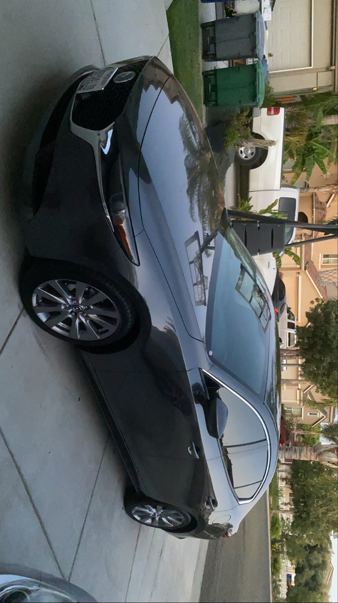
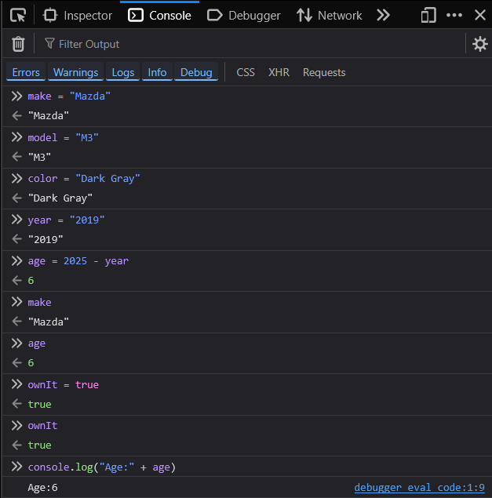
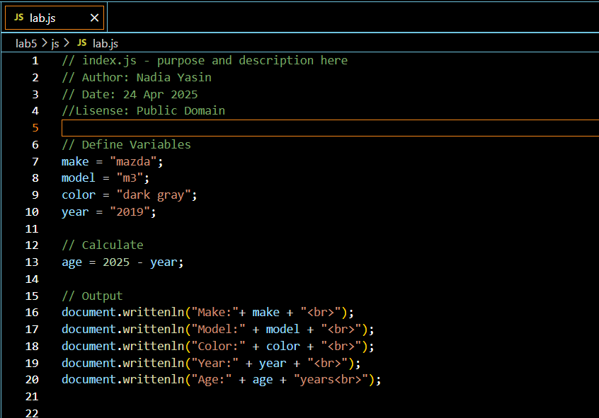
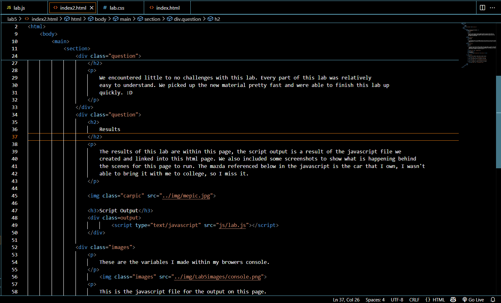

Lab 5: Data Types and Variables
Subject
The goal of this lab was to practice making variables using the console within our browers and then implement those variables within our javascript file for Lab 5. We were tasked with making those variables in javascript and then linking them into this html page to show the output.
Challenges
We encountered little to no challenges with this lab. Every part of this lab was relatively easy to understand. We picked up the new material pretty fast and were able to finish this lab up quickly. :D
Results
The results of this lab are within this page, the script output is a result of the javascript file we created and linked into this html page. We also included some screenshots to show what is happening behind the scenes for this page to run. The mazda referenced below in the javascript is the car that I own, I wasn't able to bring it with me to college, so I miss it.
Script Output
These are the variables I made within my browers console.
This is the javascript file for the output on this page.
This is a screenshot of a piece of the html for this page.
